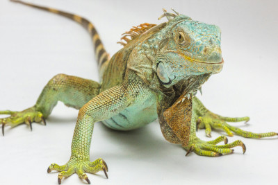
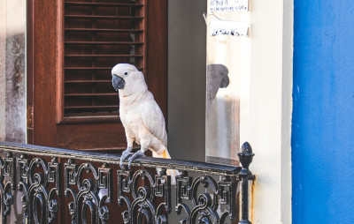

Pets, a alegria no seu dia a dia 🐱
Mas antes de saber quais são os melhores pets, por que ter um companheiro animal ao seu lado?
- Ter um pet alegra a casa e ajuda a evitar a solidão;
- Um bichinho ajuda a ensinar as crianças a terem mais responsabilidade, uma vez que demandam cuidados diários.
- No geral, sem dúvidas, um lar com um gatinho, cãozinho, peixinho ou até mesmo um hamster, é um lar mais feliz!
Sem mais delongas, quais os melhores pets para se ter?
Uma coisa que tem que ser levada em consideração é o local onde o cidadão que vai adotar o pet mora. Abaixo está alguns pets recomendados para se ter tanto em apartamento quanto para casa:
GATO
Um gato pode viver, em média, entre 12 e 18 anos, o que faz dele um dos ótimos animais de estimação para apartamento.

- Para ter um gatinho não é necessário fazer grandes adaptações no imóvel;
- O principal é telar janelas e sacadas, para garantir que seu pet não caia ou fuja;
- Para garantir o bem-estar e a saúde dos gatos, basta colocar um bebedouro e comedouro sempre limpos e cheios para a alimentação;
- Para garantir o bem-estar e a saúde dos gatos, basta colocar um bebedouro e comedouro sempre limpos e cheios para a alimentação;
- E para finalizar o pacote básico de cuidados a caixa de areia e uma boa escovinha para os pelos.
CACHORRO
Os cachorros são considerados o melhor amigo do homem e gostam de carinho e atenção. E isso pode ser obtido, independentemente do tipo de imóvel em que sua família vive.
- As raças mais indicadas para esse tipo de imóvel são: Yorkshire; Chihuahua; Pug; Pinscher; Spitz Alemão; Poodle; Boston Terrier e Dachshund;
- Ademais, contratar um adestrador pode ser uma boa alternativa para ensinar os cãezinhos a fazerem as necessidades em tapetes higiênicos;
- O adestramento é importante também para educá-los em relação aos latidos que podem incomodar os vizinhos, bem como tirar o hábito de roer móveis ou tapetes, e ainda para conviverem bem com os moradores do condomínio nas áreas comuns;
- Quem quiser ter um cachorro em apartamento precisa estar disposto a sair diariamente com ele para dar uma caminhada ou para fazer as necessidades. O exercício é fundamental para a saúde e o bem-estar dos cães;
IGUANA
As iguanas são animais exóticos e, por isso, precisam de permissão do Ibama para serem criados em ambiente doméstico. Contudo, apesar de ser um animal silvestre, é dócil e gosta de tranquilidade e silêncio. Sendo assim, é preciso acostumá-la a conviver com pessoas – principalmente se a família for muito grande.

- Para ter uma iguana é necessário criar um espaço parecido com seu habitat natural – terrários verticais com troncos e bastante umidade – e respeitar seu estilo de vida;
- A alimentação pode ser à base de frutas, legumes e verduras;
- As iguanas podem viver até 30 anos e medir até dois metros;
- Por ser um réptil, precisa de um tempo para se adaptar e seus tutores devem ter paciência. Pode demorar até três meses para que ela se acostume e não avance em seus próprios donos;
- Ainda é importante dizer que não se deve tentar interagir com as iguanas quando elas estão comendo ou dormindo, uma vez que elas podem se sentir ameaçadas e avançar;
- Outra dica é ficar de olho em sinais como movimentos rápidos de cabeça, agitação do rabo e a boca aberta, pois podem significar mal-estar ou preceder um ataque;
PORQUINHO DA ÍNDIA
Quem é fã de bichinhos extremamente fofinhos e animais pequenos vai se encantar com o porquinho da índia. Esse é um dos melhores animais de estimação para apartamento porque é silencioso e sociável.

- Os especialistas aconselham que sejam adotados em dupla, para não se sentirem sozinhos;
- Mantenha sua água limpa e fresca e alimente o pet com comidas variadas: ração específica para a espécie, frutas e vegetais frescos compõem o cardápio perfeito para os bichinhos;
- O porquinho da índia pode viver em uma gaiola espaçosa;
- Seu tamanho varia de 20 a 40 cm e sua expectativa de vida é de 4 a 8 anos;
PÁSSARO
Para quem vive em apartamento e não dispensa a companhia de um animal de estimação, os pássaros são outra boa pedida. As aves são ótimas alternativas também para quem passa o dia todo fora, porque não são tão dependentes dos donos.

- Os pássaros costumam fazer pouca sujeira, uma vez que costumam ficar em gaiolas ou viveiros;
- Um pássaro pode encher a casa de beleza com suas cores e alegrar o ambiente com sua melodia;
- O periquito é uma espécie de pássaro que está acostumada com a presença de humanos e aceita bem a vida em cativeiro;
(Vale ressaltar, porém, que ele também precisa de autorização do Ibama para ser adotado legalmente.)
- Quem busca uma ave de maior porte pode ter na cacatua uma boa opção. Trata-se de um pássaro exótico e bem interativo;
- Uma cacatua pode ficar com a gaiola aberta para dar uns passeios pela casa. Além disso, é inteligente, facilmente adestrada e muito carinhosa; (Sua adoção, novamente, carece de uma licença apropriada por parte do Ibama.)
Agradecemos a sua vinda a nosso site e esperamos ter ajudado de alguma forma.
Caso queira ver outras coisas interessantes volte para a página principal aqui.